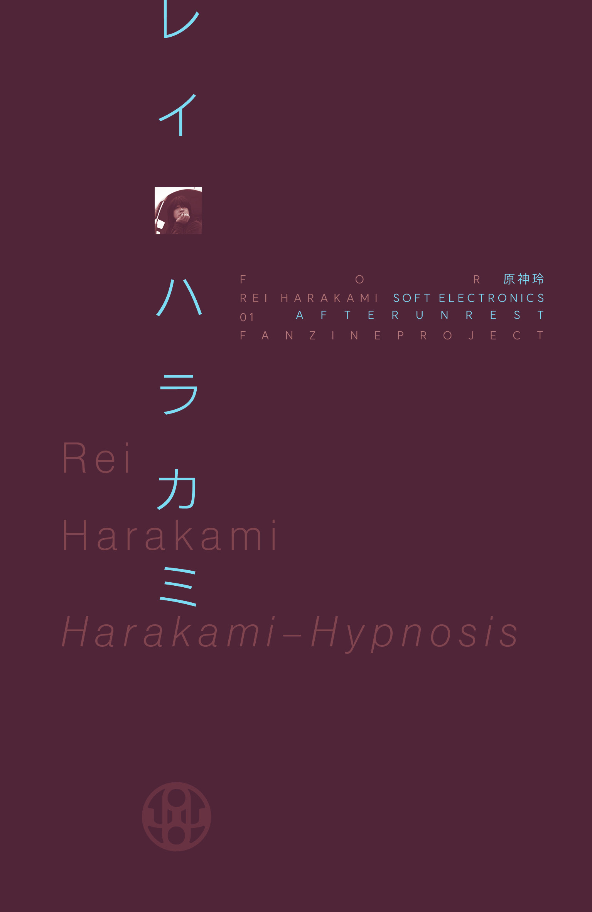
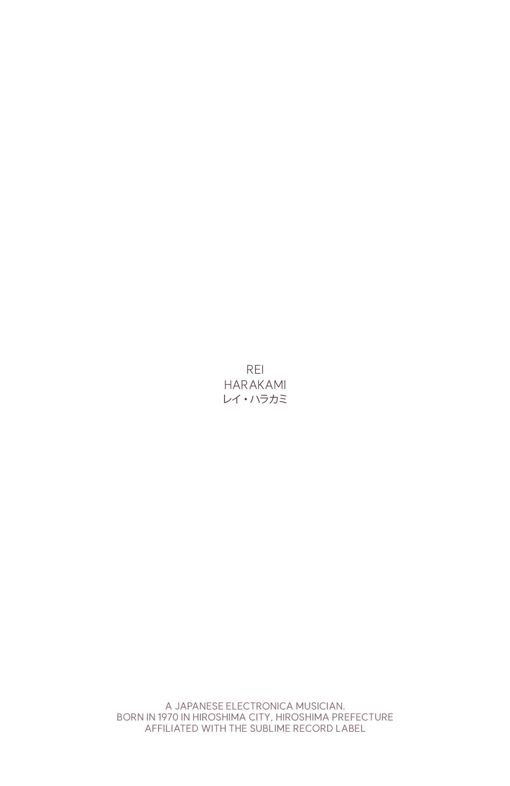
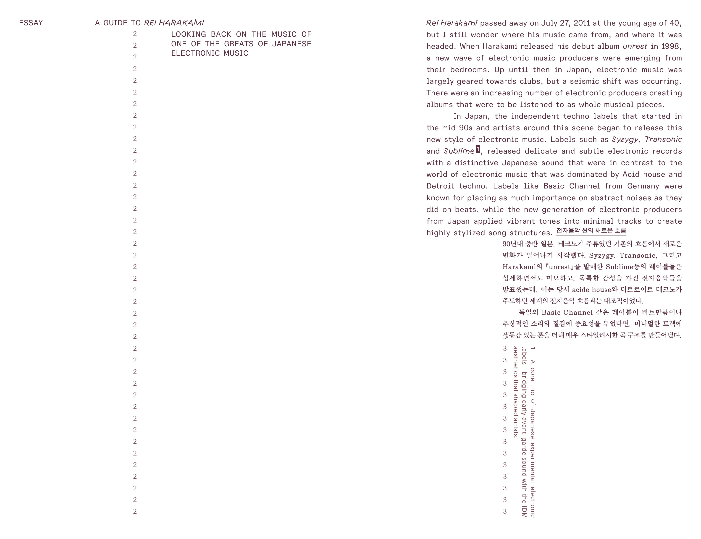
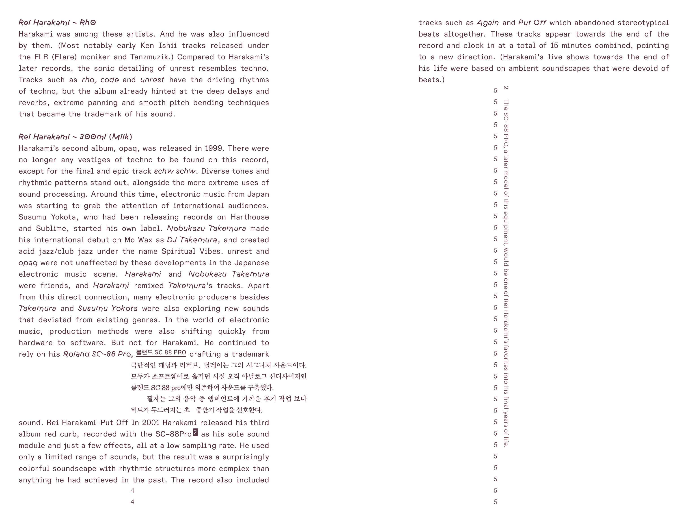
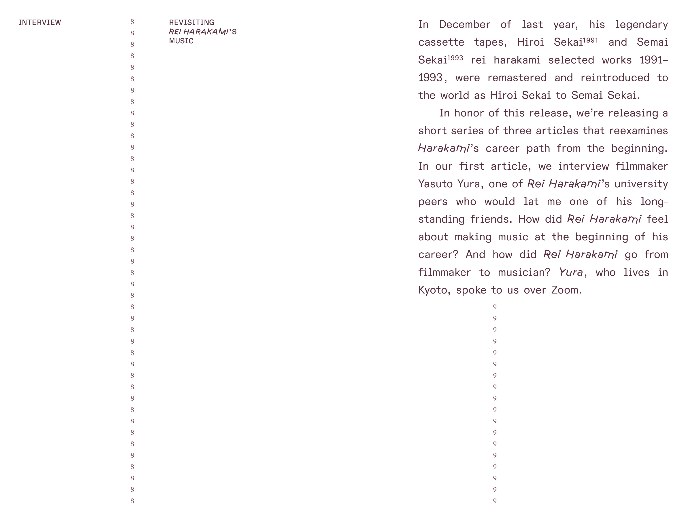
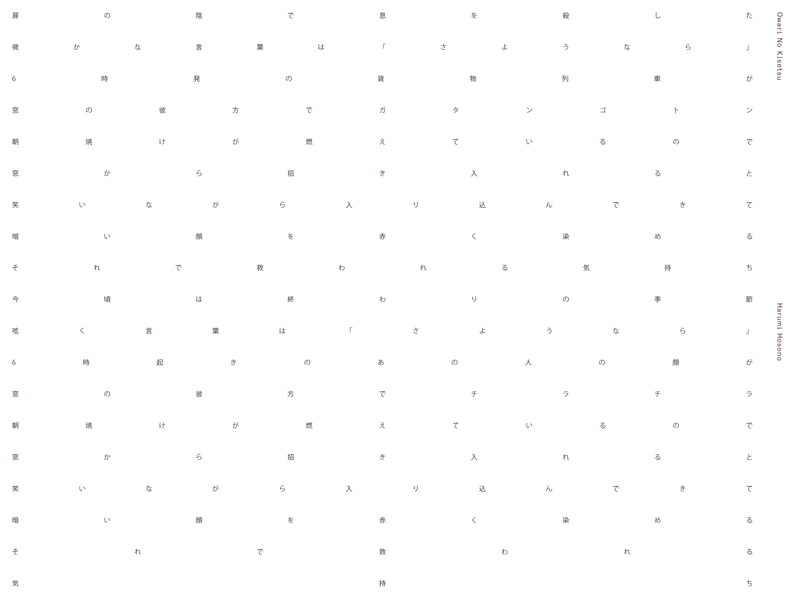
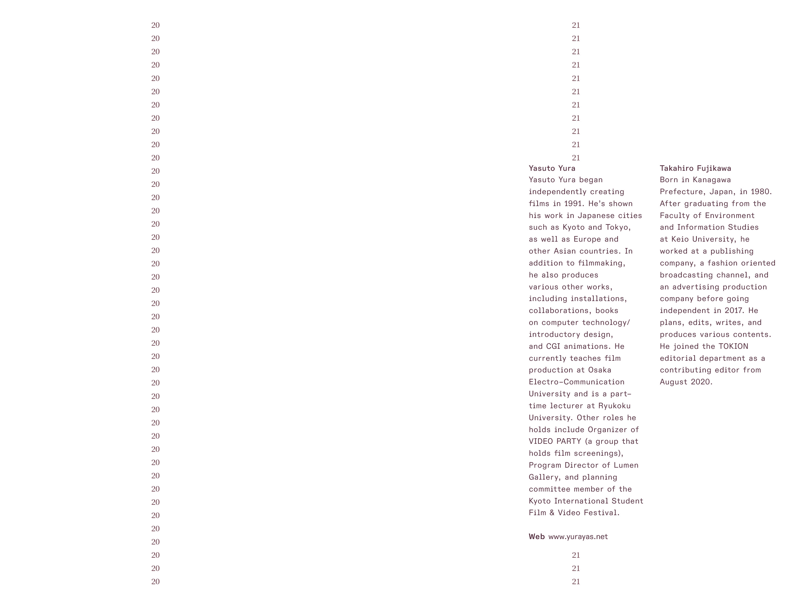
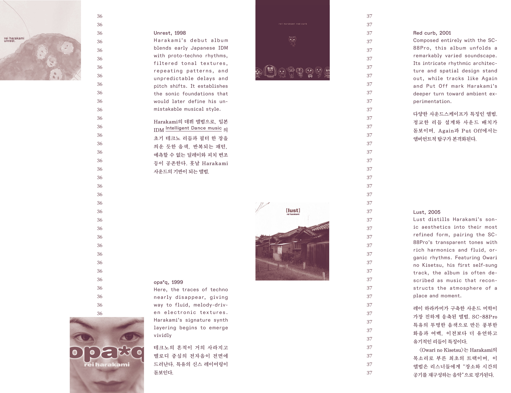
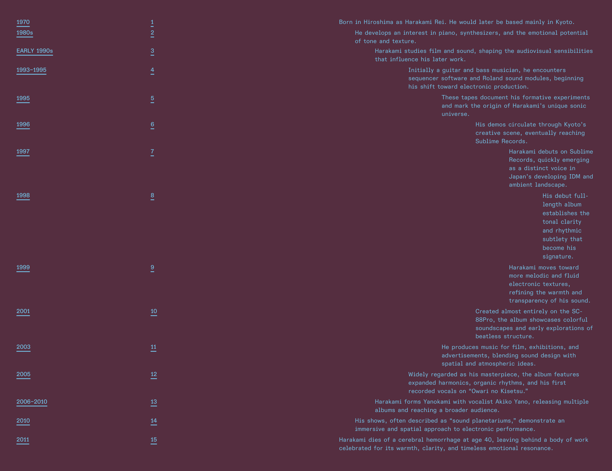

전자 음악가 레이 하라카미(Rei Harakami, 1973–2007)의 작업과 삶을 기록하고 정리한 팬진이다. 공개된 자료가 많지 않아 수집 단계부터 어려움이 있었지만, 몇 안 되는 인터뷰만으로도 그의 괴짜 같은 성격과 태도를 엿볼 수 있었다. 앰비언트에 가까운 그의 음악은 Aphex Twin, Boards of Canada, Brian Eno, Skrillex 등 수많은 유명 전자음악가들을 제치고 전자음악이 나의 청취 범위 안으로 들어올 수 있다는 가능성을 심어주었다. 비디오그래퍼이자 일러스트레이터로도 재능을 보였던 그가 살아있었다면, 어떤 작업을 이어갔을지 궁금해진다.
This is a fanzine that documents and reflects on the work and life of electronic musician Rei Harakami (1973–2007). Due to the scarcity of publicly available materials, the collection process was difficult from the start, but even a handful of interviews revealed glimpses of his eccentric personality and attitude. His ambient-leaning music, more than that of many well-known electronic musicians such as Aphex Twin, Boards of Canada, Brian Eno, and Skrillex, was what first made me feel that electronic music could belong within my own listening range. A talented videographer and illustrator as well, he often makes me wonder what kind of work he might be creating today, had he lived on.